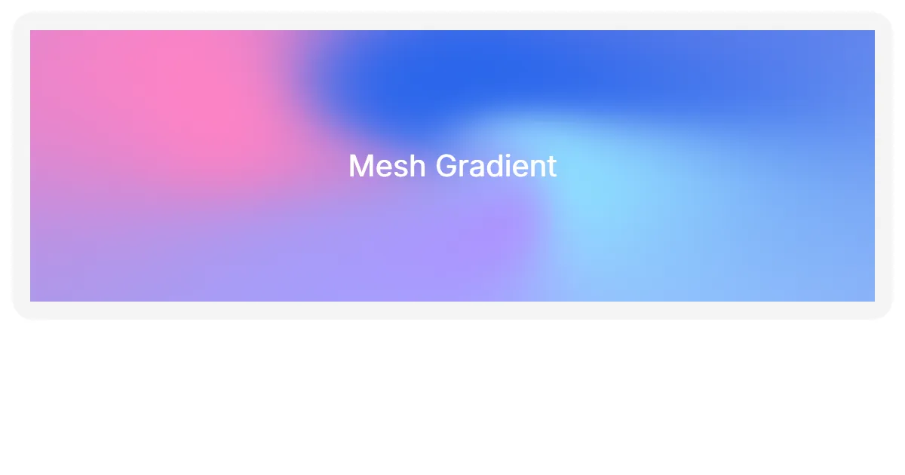

Mesh Gradient
A smoothly animated four-color mesh gradient with organic swirl and distortion.

Usage
Add glowkit next to eframe:
cargo add glowkit eframeThen draw it inside any egui Ui:
use glowkit::prelude::*;
use glowkit::backgrounds::MeshGradient;
ui.add(MeshGradient::new());
ui.add(MeshGradient::new().colors([hex("#E0EAFF"), hex("#241D9A"), hex("#F75092"), hex("#9F50D3")]));Prefer to own the code? The glowkit CLI copies this component's source into your project, shadcn-style:
cargo install glowkit-cli
glowkit add mesh-gradientEquivalent to
If you know this pattern from Paper Shaders, Mesh Gradient is the Rust version: an original egui implementation, not a port, that runs natively and in WebAssembly.
- Mesh GradientPaper Shaders
- Stripe-style mesh gradient
About Mesh Gradient
Mesh Gradient is one of 63 components in glowkit's Backgrounds category. It lives in the glowkit-backgrounds crate, enabled by the backgrounds feature of glowkit (on by default). It reads its colors from the active glowkit theme, so it matches the rest of your app in light, dark or a custom brand theme, and every color, size and timing has a setter to override it.
Full-panel animated backgrounds built from vertex-colored meshes, so they stay cheap on the GPU: aurora, silk, plasma, particles, meteors, starfields, beams, grids, waves, liquid metal and dozens more. Paint one behind any egui layout with a single call.